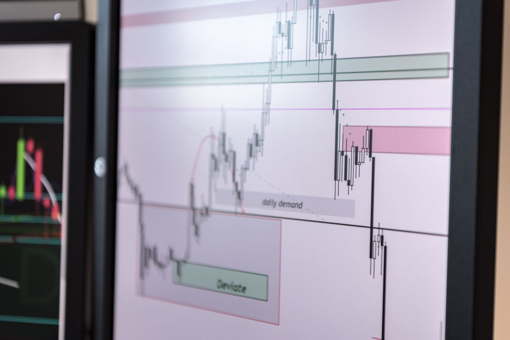

Silver's price floor comes from factories, not vaults. Industrial applications account for roughly 59% of total global silver demand in 2025 (Source: The Silver Institute). Solar panels, electric vehicles, and electronics consume the metal and never give it back. That steady pull is what separates silver from a purely speculative trade, and it is why we stock physical silver for buyers who want exposure to a real supply squeeze.

If you are trying to decide whether silver belongs in your stack right now, the short answer is yes, and the reason is on the industrial side of the ledger. Investment demand comes and goes with headlines. Factory demand shows up every quarter and takes ounces off the market permanently.
Industrial Buyers Now Outnumber Investors
For decades, silver traded like a smaller, louder version of gold. That relationship broke. In 2025, industrial fabrication is on track to hit around 650 million ounces in 2026, close to two-thirds of everything mined and recycled (Source: World Silver Survey 2026).

Here is what that shift means for you as a buyer. When a jeweler melts down old chains, silver returns to the market. When a solar panel gets glued to a roof in Arizona, those 20 grams of silver are gone for 25 years or more. Recovery rates from end-of-life electronics sit in the single digits for silver. The metal is being consumed, not stored.
Track this ratio yourself. Every year The Silver Institute publishes the World Silver Survey around April. Look at two numbers: total industrial fabrication and total physical investment. When industrial climbs and investment drops, price becomes more sensitive to any supply shock because the industrial buyer cannot walk away. A solar factory with orders on the books will pay whatever spot demands.
The Deficit Is Now Five Years Old
Silver is on course for a fifth consecutive structural deficit in 2025, estimated at approximately 95 million ounces (Source: The Silver Institute / Metals Focus). Cumulative deficits from 2021 through 2025 total nearly 820 million ounces (Source: The Silver Institute / Metals Focus).
Read that number again. 820 million ounces. That is roughly ten months of total global mine production, gone from above-ground stockpiles in five years.
Where is the metal coming from to fill orders? Vaults in London, Shanghai, and Zurich. COMEX and LBMA reported stockpiles have been draining since 2021. When those vaults get thin enough that a large industrial buyer cannot get physical delivery at spot, price has to move up to pull metal out of private hands. That is the setup we are watching.
Practical takeaway for you: watch LBMA vault holdings monthly. The report drops around the 10th of each month. If total silver in LBMA vaults drops below 700 million ounces, the physical squeeze thesis has real teeth. If it climbs back over 900 million ounces, the pressure has eased.
Solar Panels Are the Single Biggest Driver
Photovoltaic silver demand reached about 186.6 million ounces in 2025 before an expected 19% decline in 2026 to roughly 151 Moz (Source: pv magazine, World Silver Survey 2026).
Do not read that decline as bad news. Two things happened at once. Chinese solar manufacturers finally rolled out thrifting technology that cuts silver per panel by about a third. At the same time, global panel installations kept growing. The net is a step down in silver per panel, but total demand stays above where it was five years ago.
Here is what this tells you as a buyer:
- Solar is not a fad demand source. Even with thrifting, PV consumes more silver than every camera and X-ray film factory combined at the demand peak of the 1990s.
- There is a hard floor on how far thrifting can go. Silver conducts electricity better than any other metal on Earth. Copper substitution attempts have been running in labs for a decade and still produce panels with lower efficiency and shorter lifespans.
- New panel technology like TOPCon and heterojunction cells actually uses more silver per watt than older PERC cells. As the industry moves upmarket, per-panel silver content climbs even as manufacturers try to cut it.
If you want a single number to track, watch Chinese solar module exports quarterly. China ships roughly 80% of the world's panels. When export numbers rise, silver draw rises with them.
Electric Vehicles Are the Next Wave
Battery-electric vehicles use an estimated 25 to 50 grams of silver per vehicle, roughly 67 to 79% more than an ICE car (Source: The Silver Institute).
Do the math on this. Global auto production runs around 90 million vehicles per year. If just 20% of those go electric, and each one carries 40 grams of silver on average, that is 720 metric tons per year of new silver demand from EVs alone. Convert that to ounces and you get roughly 23 million ounces per year, just from EV growth over ICE.
Silver goes into EVs at every layer. It coats the contacts in battery management systems. It sits in the busbars that carry current from battery to motor. It is in the sensors that run driver assistance features. Every level 2 and level 3 autonomous system on the road today runs on silver-plated connectors because the reliability requirements are too high for cheaper metals.
For you as a silver holder, this matters because auto demand is sticky. Car makers sign multi-year supply contracts. They do not switch metals when spot moves 10%. They pay up and keep building.
What This Means for Your Physical Position
Here is a specific plan for taking a position based on this industrial thesis.
Sizing. For most retail buyers we work with, silver sits at 5 to 10% of a total precious metals allocation, with gold making up the rest. If you believe the industrial story we just walked through, push silver to 15 or 20% of your metals allocation. Do not go above that. Silver has real volatility and you need to be able to hold through 30% drawdowns without selling.
Product mix. We recommend three tiers.
- 60% one ounce sovereign coins (American Silver Eagles, Canadian Maple Leafs). Premiums are higher but liquidity is unmatched. Any dealer in the country will buy them back.
- 30% generic 10 ounce or 100 ounce bars. Lower premium per ounce, easier to store, still recognized nationally.
- 10% junk silver, meaning pre-1965 US dimes, quarters, and half dollars. These trade at close to melt value and give you fractional units for smaller transactions if you ever need to sell partial positions.
Timing. Do not try to time silver. Buy in fixed dollar amounts on a schedule. Monthly works for most people. When spot drops below the 200 day moving average, double your normal purchase. When spot runs 20% above the 200 day, cut your purchase in half. That is it. Do not overthink it.
Storage. Anything over 200 ounces gets heavy fast. A 100 ounce bar weighs 6.85 pounds. Ten of them weigh 68 pounds. Plan for a home safe rated at TL-15 or better, or use an insured vault program. Never store more than 10% of your net worth in metals at home.
What Could Break This Thesis
Every argument deserves a stress test. Three things would undermine the industrial demand case.
First, a copper substitution breakthrough. Every few years a lab announces a silver-free solar cell or copper-based EV contact. So far none have hit commercial scale. Watch for announcements from JinkoSolar, LONGi, or Tesla about production-ready silver alternatives. Until then, this risk is theoretical.
Second, a global recession that guts solar and EV installations. If Chinese solar exports drop 40% year over year, industrial silver demand falls hard. But even in a deep recession, industrial demand does not go to zero. It resets lower.
Third, a massive uptick in scrap recovery. If recyclers find a way to pull silver out of end-of-life panels economically, secondary supply climbs. Current recovery from PV panels sits under 5%. Getting that to 30% would take a decade of infrastructure buildout.
None of these risks change what you should do today. They are things to watch, not reasons to sit out.
Where to Go From Here
Start small. Buy one tube of American Silver Eagles or one 10 ounce bar this month. Get comfortable holding physical metal in your hand and storing it safely. Then set a monthly buy amount and stick to it for a year before you evaluate.
The industrial demand story is not a next-quarter trade. It is a five to ten year setup. Deficits have run for five years already. Solar and EV growth locks in demand through the end of the decade. You do not need to be right on next month's spot price. You need to be building a position while metal is still available at reasonable premiums. We stock inventory for exactly that purpose, and we would rather ship you a steady flow of ounces every month than one panic order when spot goes vertical.
Related
- Silver Price History And Long Term Trends
- How To Track Silver Price Daily
- Silver To Gold Ratio Explained How To Use It
Read next: Silver Price History And Long Term Trends